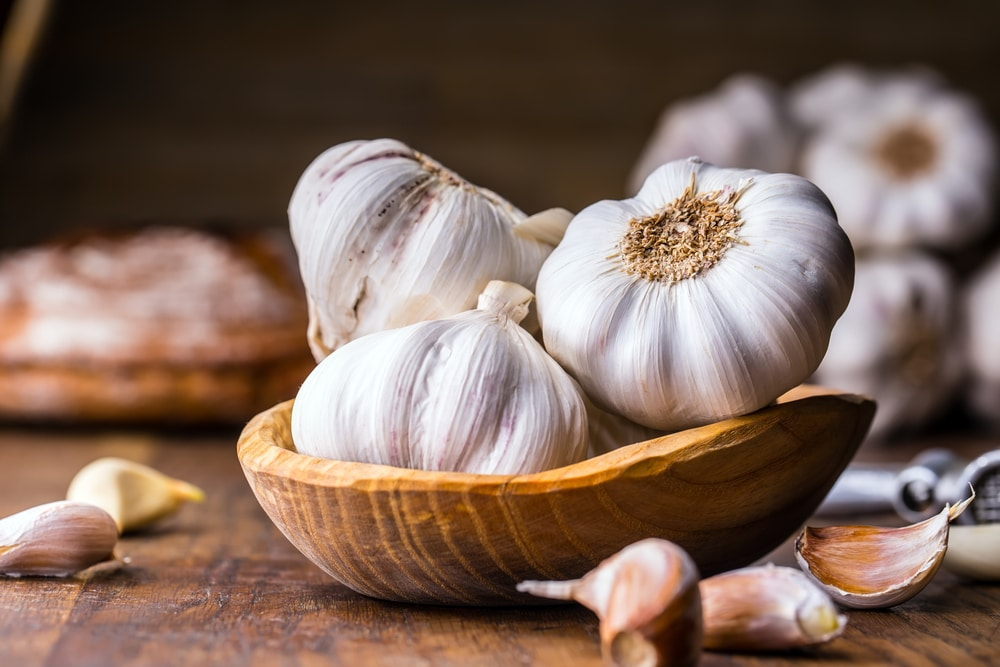
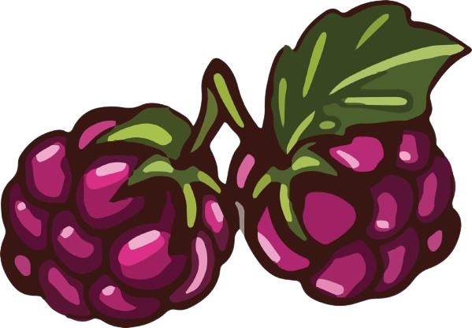

¿Que son las plantas?
Reconocemos de forma general a las plantas como seres vivientes, generalmente de color verde, que se han adaptado al medio donde viven y que, casi siempre, se encuentra fijas sobre el terreno. Sin embargo, una de las características de las plantas más destacadas es que no necesitan alimentarse de otros seres vivos para conseguir la energía que necesitan para sobrevivir. Su método para conseguir ese aporte es mediante una función denominada fotosíntesis.

Las plantas son organismos vivos que pertenecen al reino Plantae. Se caracterizan por ser principalmente autotróficas, lo que significa que pueden producir su propio alimento a través del proceso de fotosíntesis, utilizando la luz solar, agua y dióxido de carbono para generar glucosa y oxígeno. Las plantas son fundamentales para la vida en la Tierra, ya que proporcionan oxígeno y son la base de la mayoría de las cadenas alimenticias.
Tipos de plantas
Existen muchas variedades de plantas que se clasifican según diferentes criterios, como su tipo de crecimiento, hábitat, ciclo de vida, o uso. Acontinuacion te mostrare una serie de ellas.
- Helechos: Plantas que requieren ambientes húmedos y poca luz directa
- Potos: Muy resistentes, pueden crecer en diferentes condiciones de luz.
- Palmeras de interior (como la Areca): Necesitan luz indirecta brillante y un
ambiente
húmedo.
- Albahaca: Se utiliza para condimentar pastas, salsas, y ensaladas.
- Cilantro: Utilizado en la cocina latinoamericana y asiática, tanto
fresco como en salsas
- Perejil: Usado como condimento o decoración en una amplia variedad
de platos
- Orégano: Esencial en la cocina italiana, se utiliza en salsas, pizzas,
y más.
- Cebolla:Utilizado como condimento en una amplia variedad de platos, por su sabor
intenso y propiedades
medicinales.
- Cebolla Larga: Sus hojas finas y verdes se usan como condimento en ensaladas, salsas, y como
guarnición.
- Frambuesa: Aunque a menudo se le asocia con las moras, la frambuesa produce
frutos
rojos, que son dulces
y jugosos. Existen variedades de frambuesa roja y negra.
¿Que son las plantas Rubus y las Bulbosas?
Las plantas bulbosas son aquellas que tienen un órgano subterráneo llamado bulbo, que sirve para almacenar nutrientes y energía. Este bulbo les permite sobrevivir en condiciones difíciles y regenerarse cada temporada. Ejemplos de plantas bulbosas incluyen los tulipanes, los narcisos y los lirios. Estas plantas suelen florecer en primavera después de un periodo de reposo invernal. Por otro lado, Rubus es un género de plantas que incluye especies de arbustos espinosos como las zarzamoras, las frambuesas y las moras. Estas plantas suelen tener tallos con espinas, y sus frutos son agregados, formados por pequeñas drupas (frutillas) agrupadas. El género Rubus es conocido por su capacidad para crecer en zonas silvestres y su producción de frutos comestibles. Ambas, tanto las bulbosas como las del género Rubus, son muy apreciadas por sus usos en jardinería y la producción de frutos.
Beneficios
Las plantas ofrecen numerosos beneficios esenciales para la vida humana y el medio ambiente. En primer lugar, son fundamentales para la producción de oxígeno a través de la fotosíntesis, un proceso que convierte el dióxido de carbono en oxígeno. También son una fuente importante de alimentos, proporcionando frutas, verduras y granos ricos en nutrientes. Además, muchas plantas tienen propiedades medicinales y se utilizan en la elaboración de medicamentos. Las plantas mejoran el bienestar mental al reducir el estrés y la ansiedad, y son cruciales para la biodiversidad, ya que proporcionan hábitat y alimento a diversas especies. También ayudan a controlar la erosión, estabilizando el suelo, y juegan un papel clave en el ciclo del agua mediante la transpiración. Por otra parte, las plantas son una fuente de materiales como madera y fibras, y ayudan a mitigar el cambio climático al absorber dióxido de carbono. En el ámbito cultural, contribuyen a la estética y la recreación, mejorando la calidad de vida. En resumen, las plantas son esenciales para nuestra salud y el equilibrio del ecosistema.
Importancia
Comer plantas saludables es fundamental para mantener una buena salud. Son ricas en nutrientes esenciales como vitaminas, minerales y fibra, que ayudan a fortalecer el sistema inmunológico y reducir el riesgo de enfermedades crónicas como diabetes y enfermedades del corazón. Además, su alta fibra y bajo contenido calórico promueven la saciedad, ayudando a controlar el peso. Las plantas también contienen compuestos fitoquímicos que pueden reducir la inflamación y mejorar la salud cardiovascular. Una dieta rica en frutas y verduras se ha asociado con un menor riesgo de depresión y ansiedad. Además, elegir plantas saludables contribuye a prácticas alimenticias más sostenibles, beneficiando tanto nuestra salud como el medio ambiente.
El Ajo
El ajo es una planta herbácea cuyo bulbo es ampliamente utilizado como condimento en la cocina por su característico sabor y aroma. Pertenece a la familia de las liliáceas y su nombre científico es Allium sativum. El ajo es uno de los bulbos más conocidos y utilizados alrededor del mundo, no solo por su encanto culinario, sino también por sus increíbles propiedades medicinales. Ha estado presente en la historia de civilizaciones tan antiguas como la egipcia, la india y la china, y ha llegado hasta nuestros días como uno de los mejores regalos de la naturaleza. En este artículo estaremos hablando sobre sus características, propiedades nutricionales, beneficios y formas de consumo, además de responder a preguntas frecuentes relacionadas con su selección, almacenamiento, posibles efectos adversos, remedios caseros y cultivo, entre otros temas de tu interés.
Origen
El ajo proviene de Asia Central, específicamente de regiones como Irán, Pakistán y zonas del suroeste de Siberia. Desde allí, su cultivo y uso se extendieron a Europa, África y el resto del mundo, convirtiéndose en un ingrediente básico en muchas culturas. El ajo (Allium sativum) proviene originalmente de Asia Central, específicamente de regiones que incluyen Irán, Pakistán, y el suroeste de Siberia. Desde allí, se extendió a través de diversas culturas, llegando a ser cultivado y utilizado en todo el mundo. Civilizaciones antiguas como los egipcios, griegos, romanos y chinos lo adoptaron no solo como ingrediente culinario, sino también por sus propiedades medicinales. Hoy en día, el ajo es una de las plantas más cultivadas y consumidas a nivel global.

Beneficios del ajo
El ajo ofrece numerosos beneficios para la salud gracias a sus propiedades nutricionales y medicinales. Es rico en compuestos como la alicina, que actúa como un potente antioxidante y antiinflamatorio. Uno de los principales beneficios del ajo es su capacidad para mejorar la salud cardiovascular, ya que puede ayudar a reducir el colesterol y la presión arterial, favoreciendo una mejor circulación sanguínea. Además, el ajo tiene propiedades antibacterianas y antivirales, lo que lo convierte en un aliado natural para fortalecer el sistema inmunológico. Consumir ajo regularmente puede ayudar a prevenir infecciones y a combatir resfriados. También se ha asociado con la reducción del riesgo de ciertos tipos de cáncer, debido a sus antioxidantes que protegen a las células del daño. Por otro lado, el ajo es beneficioso para el control de la glucosa en sangre, siendo útil para personas con diabetes. También mejora la salud digestiva, ya que estimula la producción de enzimas digestivas y combate bacterias dañinas en el intestino. En resumen, el ajo es un alimento funcional que no solo potencia los sabores de las comidas, sino que también contribuye significativamente al bienestar general.
Mora
La mora es una fruta perteneciente al género Rubus, comúnmente cultivada en regiones de clima templado. Existen varias especies, siendo las más conocidas la mora silvestre (mora de zarza) y la mora de árbol (mora de morera). Su origen se sitúa en Europa, América del Norte y Asia, donde crece en bosques, montañas y áreas rurales. La mora crece en arbustos espinosos y su cosecha se realiza en climas templados. Este fruto ha sido parte de la dieta humana desde tiempos antiguos debido a sus propiedades nutricionales. Es rica en vitamina C, vitamina K, y antioxidantes, especialmente antocianinas, que le dan su color característico y ayudan a combatir el estrés oxidativo en el cuerpo. Además, contiene altos niveles de fibra dietética, lo que la convierte en un excelente alimento para promover la salud digestiva.
Origen
El origen de la mora se remonta a regiones del hemisferio norte, especialmente en Europa, Asia y América del Norte, donde diversas especies del género Rubus crecían de manera silvestre. Las moras han sido cultivadas y recolectadas por humanos desde tiempos antiguos, debido a su valor alimenticio y medicinal. En Europa, las moras silvestres eran conocidas por griegos y romanos, quienes las utilizaban no solo como alimento, sino también en la medicina tradicional para tratar diversas dolencias. Durante la Edad Media, las moras fueron ampliamente utilizadas en las cocinas europeas, especialmente en la elaboración de postres y mermeladas. En América del Norte, los nativos americanos también valoraban las moras por sus propiedades nutricionales. Las recogían directamente de los arbustos y las comían frescas o las secaban para conservarlas durante el invierno. Además, las raíces y hojas de las plantas de mora se usaban en infusiones medicinales para tratar problemas digestivos o inflamaciones.
Beneficios de la Mora
¡Claro! Aquí tienes los beneficios de la mora en un formato más conciso: La mora es rica en antioxidantes, lo que ayuda a combatir los radicales libres y reduce el riesgo de enfermedades crónicas. También mejora la salud digestiva gracias a su alto contenido de fibra, lo que previene el estreñimiento. Su vitamina C fortalece el sistema inmunológico y contribuye a la salud de la piel. Además, las moras promueven la salud cardiovascular al reducir el colesterol y mejorar la circulación. Ayudan a regular los niveles de azúcar en sangre, son buenas para la salud ósea gracias a la vitamina K y manganeso, y tienen propiedades antiinflamatorias. También ofrecen beneficios para la salud cerebral y son un snack bajo en calorías.